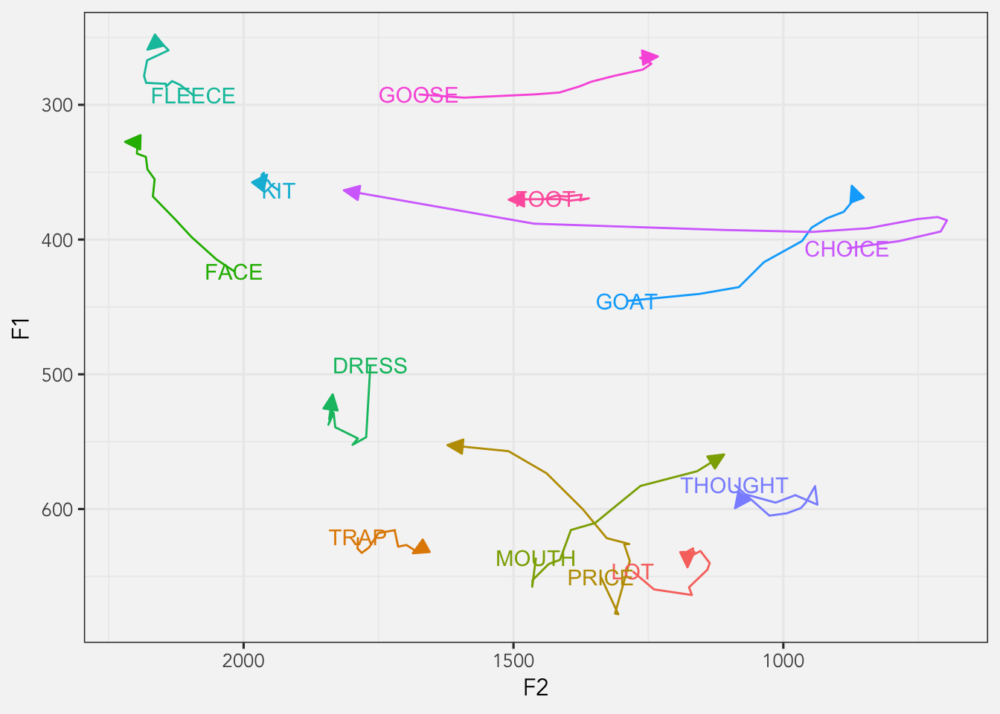
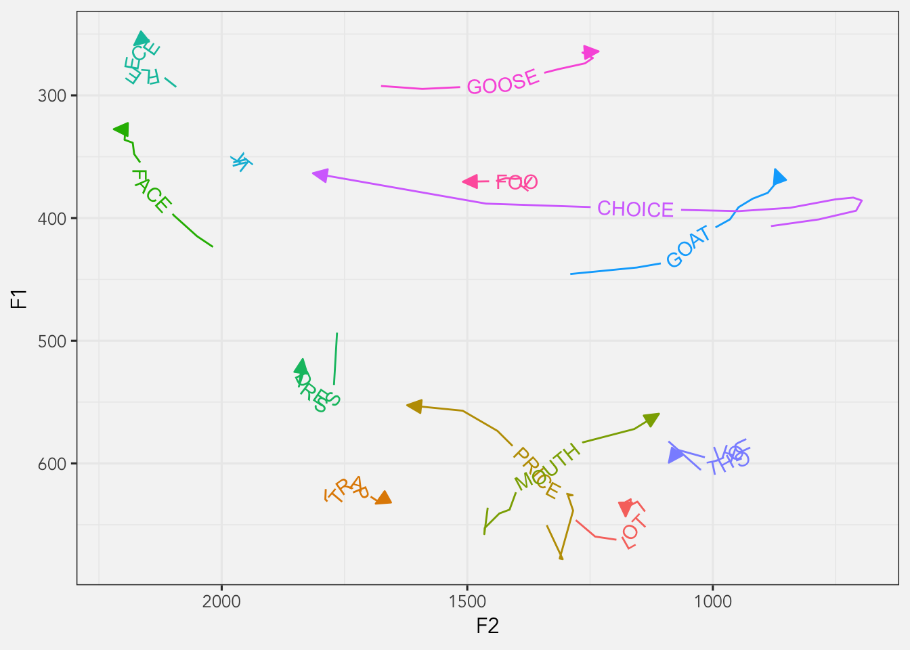
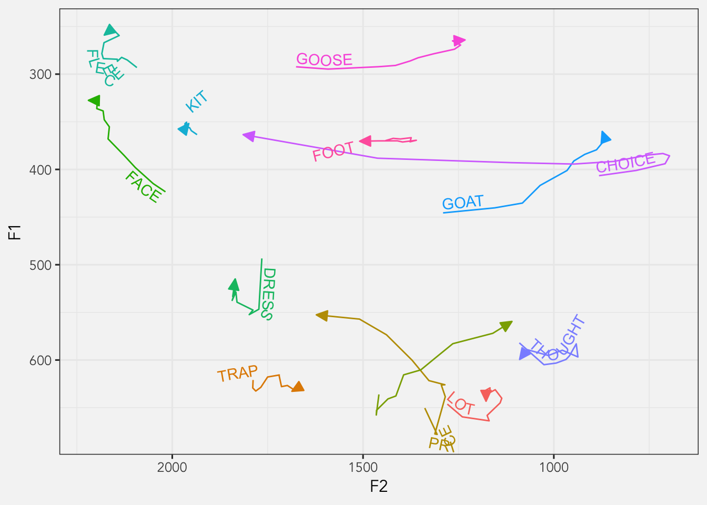
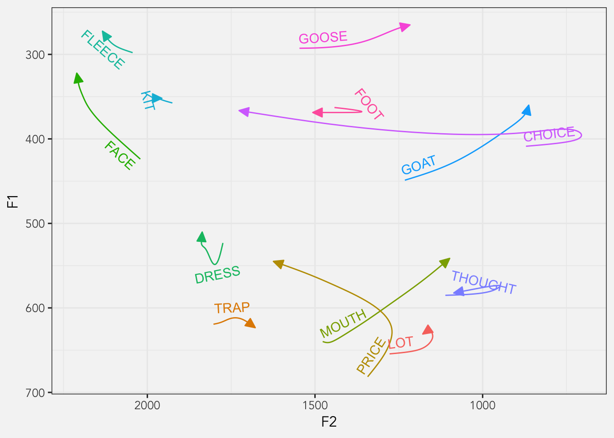
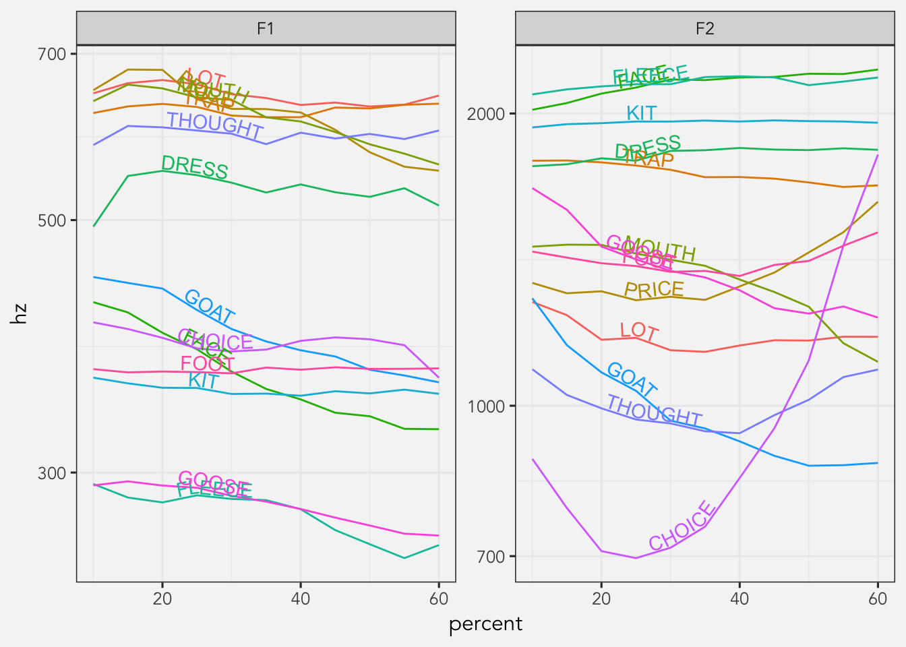
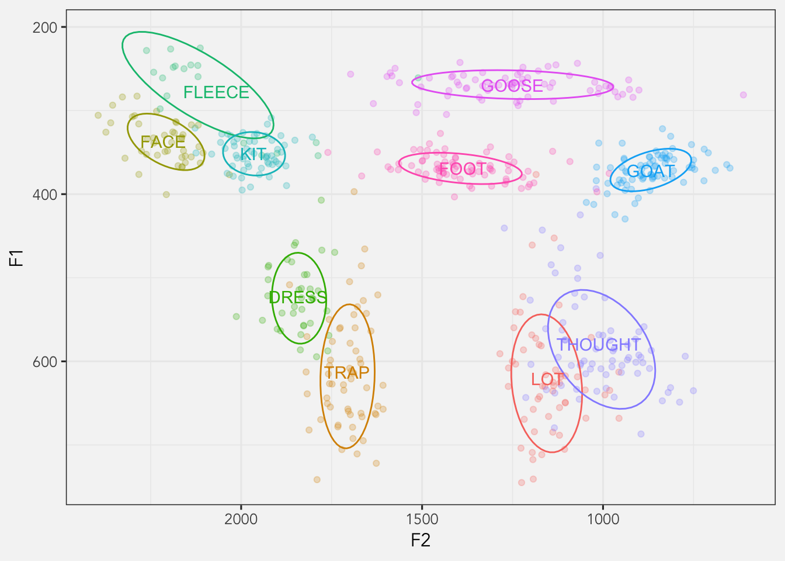

library(tidyverse)
library(joeysvowels)
library(joeyr)
# remotes::install_github("AllanCameron/geomtextpath")
# alternatively...
# install.packages("geomtextpath")
library(geomtextpath)I recently saw a tweet by @timelyportfolio that mentions an R package, geomtextpath, by Allan Cameron. The function overlays text over curved lines, giving you the possibility to add nice labels to the data.
this #rstats ggplot2 geom is really nice https://t.co/URYoZEW8uc. I have been waiting for something like for a very long time. pic.twitter.com/HCfxdGQmMt
— timelyportfolio (@timelyportfolio) December 11, 2021
Since I plot vowel trajectories a lot and have to label them, I thought I’d try it on some vowel data to see how well it works.
Warning
When I originally wrote this post in 2021, I was using an earlier version of the package. In 2023 when I transferred to my new website, I reran it with a later version and some of the code broke. I’ve update the code now, but please be aware that the prose, which is based on the earlier version, may not match the plots, which are created with the latest release.
Data prep
I’ll use some trajectory data I have in my joeysvowels package. I’ll mostly work with data from the coronals object. This contains a bunch of formant trajectory data from me reading all my vowels flanked by a bunch of combinations of coronal consonants (they were mostly nonce words like /sneɪz/, /nɔdz/, and /dʊz/).
coronals# A tibble: 14,446 × 13
vowel_id start end t percent F1 F2 F3 F4 word pre vowel
<dbl> <dbl> <dbl> <dbl> <dbl> <dbl> <dbl> <dbl> <dbl> <chr> <chr> <fct>
1 1 2.06 2.41 2.06 0 387. 1701. 2629. 3164. snoʊz sn GOAT
2 1 2.06 2.41 2.07 5 483. 1591. 2454. 3310. snoʊz sn GOAT
3 1 2.06 2.41 2.09 10 525. 1466. 2526. 3343. snoʊz sn GOAT
4 1 2.06 2.41 2.13 20 530. 1297 2616. 3330 snoʊz sn GOAT
5 1 2.06 2.41 2.14 25 497. 1223. 2562. 3280. snoʊz sn GOAT
6 1 2.06 2.41 2.16 30 461. 1172. 2559. 3252 snoʊz sn GOAT
7 1 2.06 2.41 2.18 35 414. 1120 2625. 3247. snoʊz sn GOAT
8 1 2.06 2.41 2.20 40 423 1072. 2655. 3175. snoʊz sn GOAT
9 1 2.06 2.41 2.22 45 396. 1074 2623. 3248. snoʊz sn GOAT
10 1 2.06 2.41 2.23 50 368. 1018. 2602. 3168. snoʊz sn GOAT
# ℹ 14,436 more rows
# ℹ 1 more variable: fol <chr>There’s a lot of data and I don’t need to plot all trajectories of all observations, so I’ll boil them down to one trajectory per vowel by taking the median per timepoint per vowel. Also, because these vowels are flanked by coronals, the edges of the vowel trajectories, particularly the second halves, all converged towards the high front portion of the vowel space, so I’ll just get a middle portion of the trajectory.
avg_trajs <- coronals %>%
group_by(vowel, percent) %>%
summarize(across(c(F1, F2), median)) %>%
filter(percent >= 10, percent <= 60) %>%
print()# A tibble: 143 × 4
# Groups: vowel [13]
vowel percent F1 F2
<fct> <dbl> <dbl> <dbl>
1 LOT 10 646. 1279.
2 LOT 15 660. 1240.
3 LOT 20 664. 1170.
4 LOT 25 658. 1175.
5 LOT 30 645 1141.
6 LOT 35 640. 1136.
7 LOT 40 631. 1154.
8 LOT 45 634. 1168
9 LOT 50 629. 1167.
10 LOT 55 632. 1178.
# ℹ 133 more rowsBasic Trajectory Plots
Here’s what this data looks like.
my_arrow <- arrow(ends = "last", type = "closed", angle = 25, length = unit(0.3, "cm"))
ggplot(avg_trajs, aes(F2, F1, color = vowel, group = vowel)) +
geom_path(arrow = my_arrow) +
scale_x_reverse() +
scale_y_reverse() +
theme_joey_legend()
Okay, normally what I’d do here is create a separate dataset that has just the vowel onsets and plot it separately like this. I can remove the legend too at this point since it contributes no new information.
avg_trajs_onsets <- avg_trajs %>%
filter(percent == min(percent))
ggplot(avg_trajs, aes(F2, F1, color = vowel, group = vowel)) +
geom_path(arrow = my_arrow) +
geom_text(data = avg_trajs_onsets, aes(label = vowel)) +
scale_x_reverse() +
scale_y_reverse() +
theme_joey() +
theme(legend.position = "none")
However, with this geomtextpath package, I might be able to save myself the work of creating a new dataframe.
F1-F2 plots
Okay, now we’re ready to try out geomtextpath. Here’s what it looks like with the function in its most basic form.
ggplot(avg_trajs, aes(F2, F1, color = vowel)) +
geom_textpath(aes(label = vowel), arrow = my_arrow) +
scale_x_reverse() +
scale_y_reverse() +
theme_joey() +
theme(legend.position = "none")
So, a few things to note here. The behavior of the function is most easily seen in cut_path = FALSE if I wanted) with the label centered in the gap. Overall, I’m not a huge fan of the out-of-the-box look, but we can adjust things to make it look better.
One main problem with this look is that the lines go through the label, which isn’t great. We can adjust the vertical position of the label with the vjust argument, which will position it slightly above the line. While we’re adjusting the position of the label, I’ll set hjust to 0, which will move it to the onset of the vowel.
ggplot(avg_trajs, aes(F2, F1, color = vowel)) +
geom_textpath(aes(label = vowel),
hjust = 0,
vjust = -0.25,
arrow = my_arrow) +
scale_x_reverse() +
scale_y_reverse() +
theme_joey() +
theme(legend.position = "none") 
For some vowels, this looks pretty well. However, because of the jaggedness of the lines, the label itself is going to be pretty jagged. Lines like
Fortunately, the argument straight, when set to TRUE, will force the text to be straight. According to the documentation, it is helpful for “noisy paths”, which I think perfectly applies to our this data.
ggplot(avg_trajs, aes(F2, F1, color = vowel)) +
geom_textpath(aes(label = vowel),
hjust = 0,
vjust = -0.25,
arrow = my_arrow,
straight = TRUE) +
scale_x_reverse() +
scale_y_reverse() +
theme_joey() +
theme(legend.position = "none")This is better, but I’m not a fan of how some of them cross the lines themselves (like
A potential solution I came up with is to fit a GAM to the data. Here’s some quick and dirty code that fits GAMs to both F1 and F2 for each vowel, extracts predicted measurements, and plots them instead.
library(mgcv)
library(itsadug)
coronals_gam_preds <- coronals %>%
# Subset the data
filter(percent >= 10, percent <= 60) %>%
select(vowel, percent, F1, F2) %>%
# Add an id column
rowid_to_column() %>%
# Reshape it to a "long" formant
pivot_longer(cols = c(F1, F2), names_to = "formant", values_to = "hz") %>%
# Group for the GAMs
group_by(vowel, formant) %>%
nest() %>%
# Fit the GAM and extract predicted measurements
mutate(mdl = map(data, ~bam(hz ~ percent + s(percent), data = .)),
preds = map(mdl, ~get_predictions(., cond = list(percent = 10:60), print.summary = FALSE))) %>%
# Post-processing
select(-data, -mdl) %>%
unnest(preds) %>%
rename(hz = fit) %>%
select(-CI) %>%
pivot_wider(names_from = formant, values_from = hz) %>%
print()# A tibble: 663 × 4
# Groups: vowel [13]
vowel percent F1 F2
<fct> <int> <dbl> <dbl>
1 GOAT 10 449. 1232.
2 GOAT 11 447. 1218.
3 GOAT 12 445. 1204.
4 GOAT 13 444. 1189.
5 GOAT 14 442. 1176.
6 GOAT 15 440. 1162.
7 GOAT 16 438. 1149.
8 GOAT 17 436. 1136.
9 GOAT 18 434. 1123.
10 GOAT 19 432. 1111.
# ℹ 653 more rowsggplot(coronals_gam_preds, aes(F2, F1, color = vowel)) +
geom_textpath(aes(label = vowel),
vjust = -0.5,
hjust = 0,
arrow = my_arrow,
straight = TRUE) +
scale_x_reverse() +
scale_y_reverse() +
theme_joey() +
theme(legend.position = "none")
The results show a smoother line and indeed smoother labels, but there are still some positions I’m not a fan of, like
Overall, I’m haven’t quite found a plot that I’m satisfied with. Perhaps with a different dataset it could work, but at least for this one, this F1-F2 plot isn’t quite doing what I was hoping.
Spectrogram plots
Another potential use for geomtextpath is to create spectrogram-like plots. Here’s a simple one with all the vowels plotted, split up by formant.
avg_trajs %>%
pivot_longer(cols = c(F1, F2), names_to = "formant", values_to = "hz") %>%
unite(traj_id, vowel, formant, remove = FALSE) %>%
ggplot(aes(percent, hz, color = vowel)) +
geom_textpath(aes(group = traj_id, label = vowel), vjust = -0.1, hjust = 0.3) +
scale_y_log10() +
facet_wrap(~formant, nrow = 1, scales = "free") +
theme_joey() +
theme(legend.position = "none")
It’s not bad. With the help of color to help tell the lines apart, I think it does a pretty good job to be honest. Although, I’ll mention that I tried this plot out with a couple different aspect ratios, and taller ones work better.
Ellipses?
geomtextpath has a few other functions, including geom_textdensity, geom_textsmooth, geom_textcontour, geom_textdensity2d, which correspond to adding labels to density plots (geom_density), 2D density plots (geom_textdensity2d), smooths (stat_smooth), and contour plots (geom_contour). What I would love to see is a function that correspoinds to stat_ellipse. I often make plots like this where I add dots and ellipses in the same plot and then add labels at vowel averages with a separate data frame:
midpoints_means <- midpoints %>%
group_by(vowel) %>%
summarize(across(c(F1, F2), mean))
ggplot(midpoints, aes(F2, F1, color = vowel)) +
geom_point(alpha = 0.25) +
stat_ellipse(level = 0.67) +
geom_text(data = midpoints_means, aes(label = vowel)) +
scale_x_reverse() +
scale_y_reverse() +
theme_joey() +
theme(legend.position = "none")
It would be pretty cool to see these ellipses get the labels on them rather than plotting at the centers.
Conclusion
That’s all. I just wanted to try something new. Maybe this might be useful to you as you plot your vowel trajectory data.